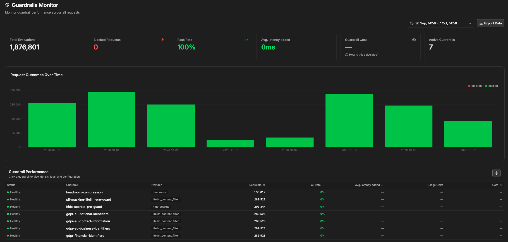
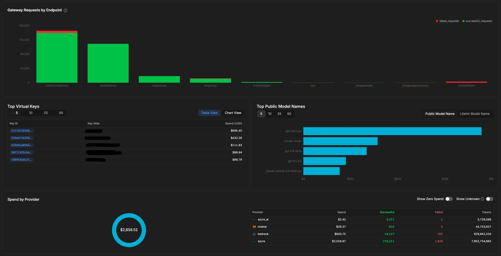
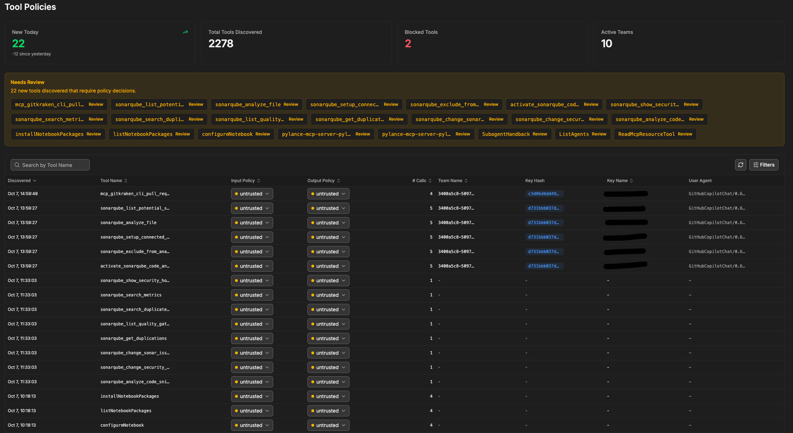
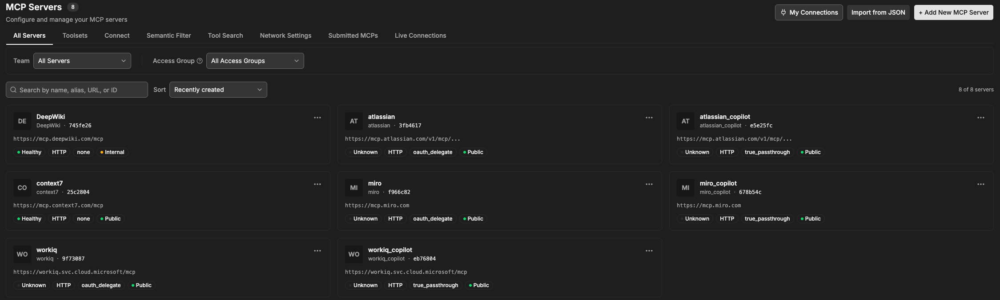
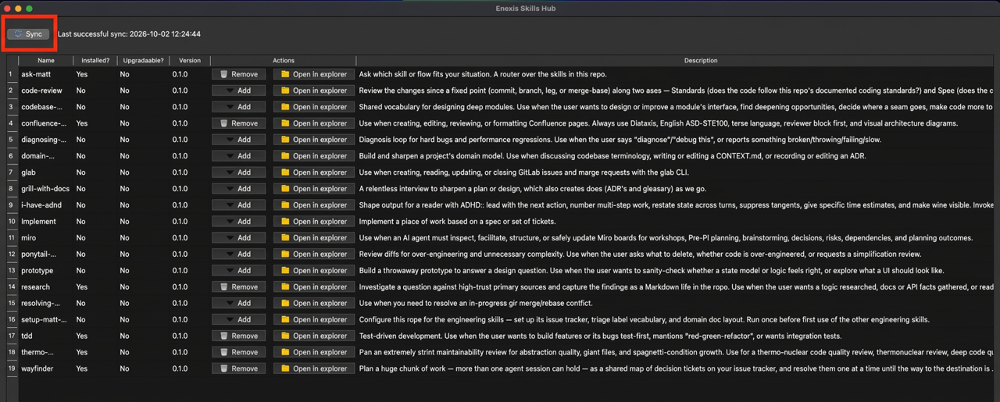
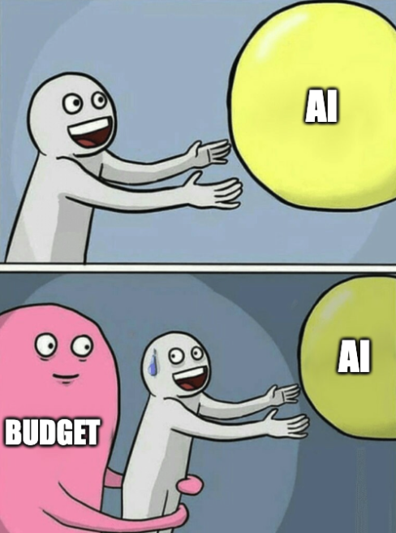
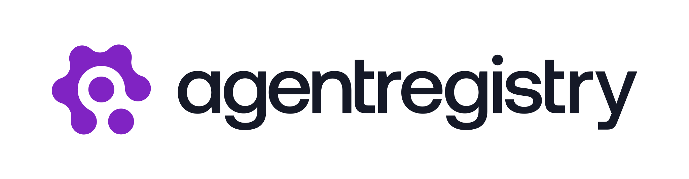
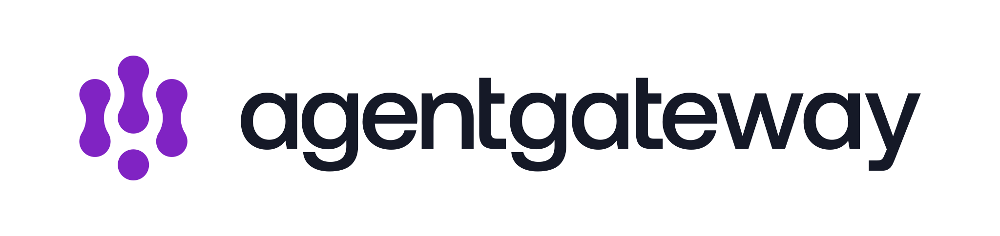
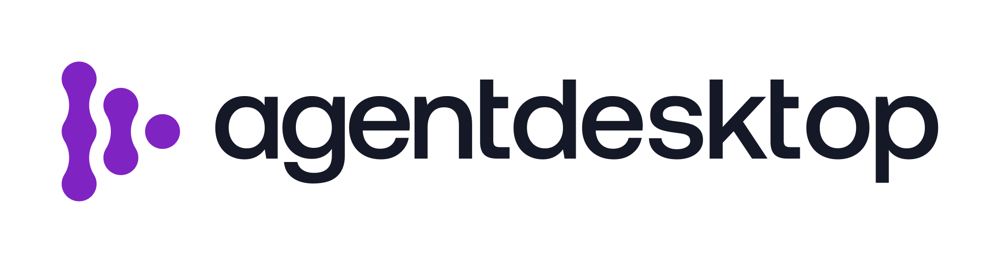
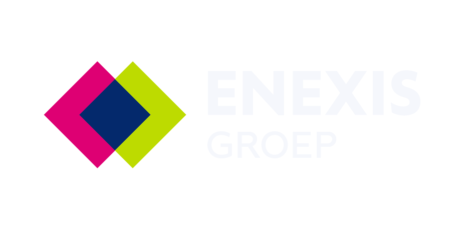

claude-routerclaude-haiku-4.5claude-sonnet-4.6-bedrockclaude-sonnet-5-bedrockclaude-haiku-4.5-bedrockclaude-sonnet-5.5-bedrockclaude-opus (only via router)
“Refactor this function”→keyword rule: COMPLEX→Luna xhigh / Sonnet 5.5
Classifiers: GPT-6 Luna (none) / Claude Haiku 4.5 Bedrock. *Opus is a router target, not an addition to the direct-selection list.
08 / capabilities
Platform capabilities.
What I do as Platform Engineer
Create autorouters
Check and maintain logs
Set the budget and help people getting the most out of it
Check Tools
Set Guardrails
Healthchecks in all forms
Gateway capabilities
01
LogsTrace requests and keep the platform observable.
02
GuardrailsProtect requests with policy and safety controls.
03
Budget and usageTrack consumption, cost, and agreed limits.
04
ToolsControl which tools can be called through the platform.
05
MCPUse approved MCPs with pass-through OAuth 2.0.
06
SkillshubCentralized skills we have approved for organization-wide use
Capabilities around every model request
08 / capabilities in practice
Guardrails.

08 / capabilities in practice
Budgets.

08 / capabilities in practice
Tools.

08 / capabilities in practice
MCP.

08 / capabilities in practice
Skillshub.

Workshop access instructions are provided separately.
09 / gateway in action
One prompt. Seven hops.
10 / make every token count
Spend context with intent.
COMMAND OUTPUTRTKShow the AI only the command output it needs.rtk git diff · rtk pytest
RESPONSE LENGTHCavemanKeep the answer short. Do not remove code or requirements.
CODE CHANGESPonytailReuse what already exists. Write less new code.
CONVERSATION CONTEXTDCP compressionSummarize finished context instead of sending it all again.
AI MEMORY LAYERKeep durable context outside the prompt.Store stable project decisions, conventions, and lessons in a searchable memory layer. Retrieve only what the task needs.
RIGHT-SIZED CONTEXT+SUITABLE MODEL→LESS WASTE · CLEARER WORK
Long-context cost: GPT-5.6 Luna / GPT-6 Luna requests with >272,000 input tokens: 2× input/cache rates, 1.5× output for the whole request. Not a blanket rule for all GPT models; check current platform pricing.

11 / a little more room
BUDGET UNLOCKED
$80→$100
+$20 / +25%
More room to experiment, learn, and build responsibly.
If you're gonna hit the budget, it's a skill issue.
Harness support / today → future
Your harness. Your responsibility.
TODAY / YOUR CHOICENo Enexis-provided or mandated harness.You choose your own harness within applicable policies. Handle data, tools, and access rights responsibly.
FUTURE / AI PLATFORM TEAMFuture: Enexis-code-harnessWe will provide an Enexis code harness. Our ambition is to make its use mandatory; enforcement is not yet in place.
No technical enforcement ≠ everything is allowed.Security policies and your responsibility still apply.
Future direction, not a currently available service. No delivery date or enforcement commitment announced here.
AI Platform Team / exploring the next building blocks
Current running PoCs.
solo.io

agentregistry

agentgatewaykagentcoder.com

agentdesktop

enexis-code-harnessOpenChoreo
PoCs are evaluations, not production services or delivery commitments.
12 / get ready
Get your key. Run the smoke test.
1 / GET YOUR KEYFollow the workshop access instructions
Request a workshop key through the channel provided by your facilitator.
If you already have a personal key, add it as a separate provider:
In OpenCode:/connect
Choose the workshop provider.
Choose Add account.
Paste the workshop key.
Name ‘Workshop’
Remove after this session
2 / CHECK YOUR SETUP
01Key works
02Repository is local, open in OpenCode V1
03Restart OpenCode, Context7 is available
04Ask before changing code
agent prompt
Explain what the application does.
Do not change any files.
✓CheckAccessRepositoryNo unintended diff
Then: 15-minute break.Finish setup and the smoke test first. Stuck? Ask in the GTG channel: search “GenAI Platform Support”.If setup does not work, team up with someone whose setup works.
05 / autonomy is earned
You cannot skip the climb.
1ChatAsk, copy, paste.
2Single agentOne agent writes code. No loop yet.
3In the loopYou steer every step. Skills and guards.YOU ARE HERE
4On the loopYou supervise. The agent runs the loop.
5Software factoryHundreds of agents, out of the loop.
LESS TRUST
MORE TRUSTAs trust grows, you can climb the ladder.
The shortcutJump straight to the factory→AI slop + token burn→More credits + better model→Still slop
TOOL-AGNOSTICThe tools are examples. The lifecycle is the lesson.Keep to the software lifecycle principles and any tool will do.
16 / step one: triage
01 Triage before code.
01 / INA raw issue
Add a Grid Guardian briefing
→
02 / TRIAGEIs it ready?
Read the context
Verify the claim
Ask if something is unclear
→
03 / OUTA decision
BugEnhancement
Ready for implementationNeeds a specNeeds human inputWon't fix
DEMO ONLYToday you start hands-on at Spec, as triage is less necessary when you are in the loop.
17 / automate the front door
Triage can start before anyone looks.
01 / MONITORDatadog alert fires
→
02 / TRIGGERWebhook starts an agent
→
03 / TRIAGE AGENTSame /triage skill
→
04 / ISSUETicket with a decision
→
05 / PEOPLEA person confirms
LATER, WITH TRUSTTriage says ready-for-agent→Implementation starts by itselfno person in between
DEMO ONLYThe skill you run by hand today is the one you can trigger automatically later.
18 / step two: specify
02 Specify before you implement.
01 / FRONTIERAsk the open questions.Ask the whole current frontier: decisions whose prerequisites are already settled.
02 / RECOMMENDOffer a recommended answer.Make the trade-off visible instead of hiding it in generated prose.
03 / NEXT ROUNDWait, then recompute.Use the answers to find the next questions. Stop when every branch is settled.
ISSUE+REPOSITORY+GRILLING→settled specification
19 / choose the grilling workflow
Same interview. Different memory.
GRILL-ME · STATELESSInterview that lives in the chatAsks questions in rounds and waits for your answers. Nothing is written to the project. When the session ends, the decisions end with it, unless you write them down.
QUESTION → ANSWER → NEXT FRONTIER
GRILL-WITH-DOCS · STATEFULInterview that updates the projectCombines grilling with domain-modeling. It records settled decisions in ADRs and glossary entries as the design changes, so the next session starts from them.
QUESTION → ANSWER → ADR / GLOSSARY
Grilling is the shared process.Choose the docs workflow when decisions need to outlive the session.
pause + do / spec
PAUSE + DO
Shape the spec. Inspect the output.
Turn the Grid Guardian issue into a settled specification and tickets.
01Run /grill-with-docs on the issue.
02Answer every question. Accept or change each recommendation.
03Ask /to-spec and /to-tickets to write the spec and tickets.
04Inspect the generated spec and ticket Markdown documents.
DONE WHENThe generated spec and tickets are clear enough for an agent to implement.
20 / keep the session focused
Finish the spec. Then hand off.
01 / CURRENT SESSIONSettle the ticket.Finish the specification, acceptance criteria, examples, and out-of-scope notes.
→
02 / /handoffWrite what the next session needs.Capture the goal, decisions, files, checks, and the next action in a handoff document.
→
03 / NEW SESSIONImplement one ticket.Start clean. Use the handoff as context, then implement and test one ticket at a time.
/handoffOne implementation session per ticket keeps context small.
pause + do / handoff
PAUSE + DO
Move the work to a new session.
Carry the settled spec and tickets into implementation without carrying the whole chat.
01Run /handoff. Tell the agent the new session will implement the spec and tickets with /devday-implement and /code-review.
02Read the handoff document before starting the new session.
DONE WHENThe next session has enough context to start implementation without reopening the whole interview.
21 / step three: implement
03 Implement one small tested change.
01REDWrite the behavior test first.
→
02GREENImplement only enough to pass.
/devday-implement+ /tddKeep the Streamlit layer thin.
pause + do / implement
PAUSE + DO
Implement the spec. Inspect the change.
Let the agent implement the small story, including its tests.
01Give the new session the handoff, spec, and tickets.
02Ask /devday-implement to implement the full spec.
03Let the agent write and run the tests as part of the implementation.
04Inspect the diff, test results, and behavior. Instruct the agent when something needs changing.
DONE WHENThe small spec is implemented, its tests are green, and you understand the result.
22 / step four: review and verify
04 "Tests pass" is not the review.
STANDARDSDoes the change follow the repository standards?
SPECDoes it implement the issue and acceptance criteria?
SECURITYDoes the output exclude fixture and internal metadata?
USER REVIEWCan a real user understand the known, unknown, and no-active states?
/code-reviewStandardsSpec/user-review
pause + do / review and verify
PAUSE + DO
Review what the agent built.
Let the agent review and fix the change. You inspect the result.
01Ask the agent to run /code-review for Standards and Spec.
02Ask it to run /user-review against the app and exercise the key scenarios.
03Instruct the agent to fix the findings it can address, then rerun the review.
04Inspect the changed diff, review output, and user-facing behavior.
DONE WHENReview findings are addressed or consciously left open, and you have inspected the outcome.
23 / guards, at every step
Guards run at every step.
TRIAGESPECIMPLEMENTVERIFYSHIPWHAT IT VERIFIES
ACCEPTANCE CRITERIAThe ask is explicit and checkable
TESTSThe agreed behavior still holds
RUFFCode quality and style
PRE-COMMITLocal checks, before code leaves your machine
REVIEWStandards, spec and product
CIEverything again, for everyone
pause + do / guards
PAUSE + DO
Ask the agent to run the guards.
Inspect the local checks that protect the repository.
01Ask the agent to run the repository's local tests.
02Ask it to run Ruff and the configured pre-commit or repository checks.
03Inspect the output and instruct the agent to fix failures, then rerun the checks.
04Keep the result in your local clone. Commit to your own fork if you want to keep it.
DONE WHENThe local guards are green, and you have inspected the results and any fixes.
24 / why spec and guards matter
Spec and guards keep the agent on the rails.
RAIL ONESpecAcceptance criteria say where the track goes.
RAIL TWOGuardsTests, Ruff, pre-commit, CI keep it there.
25 / shipping, optional hands-on
Agents can prepare the pull request.
01 / OPEN · TRY ITWrite and open the PRThe /pr skill writes the PR body from the diff and the spec. The gh CLI opens it.
02 / FIXFix failing CIThe agent reads the failing logs, fixes the cause, and pushes again.
03 / RESPONDHandle review commentsThe agent proposes fixes for the team's comments.
04 / PEOPLEPeople approve and mergeReview, approval and merge stay with the team.
pause + do / ship
PAUSE + DO
OPTIONAL
Open a mock pull request.
Let the agent prepare the PR. Only if you have the GitHub CLI.
01Tell the agent: “Create a PR with the gh CLI and the /pr skill.”
02Inspect the PR body the agent created.
DONE WHENThe PR exists and you have inspected the body for accuracy.
26 / retro
Every cycle makes the next one better.
01 / /retroLook back at your session.The retro skill reads the session and suggests how to improve the agent's environment for future runs.
→
02 / PICK ONEChoose one improvement.The one that would have saved you the most time or caught a mistake earlier.
→
03 / WRITE IT DOWNMake the tweak.An AGENTS.md rule, a skill tweak, or a new guard. Not a lesson that lives in your head.
27 / retro
Do not automate the retro.
AUTOMATED RETRO
Agent adds every lesson→Skills and setup keep growing→Agent half-ignores it→New model: setup breaks
Drift
YOU IN THE LOOP
You read the suggestions→You verify and pick one→Setup stays small→New model: still flexible
Trust
pause + do / retro
PAUSE + DO
Run the retro yourself.
Make the next cycle a bit better than this one.
01Run /retro on your session.
02Read every suggestion. Do not apply them all.
03Pick the one that would have saved you the most time.
04Write it into the repository: a rule, a skill tweak or a guard.
DONE WHENOne small improvement is saved in the repository, nothing more.
28 / close
Trust is built, not bought.
01Stay in the loop first. You decide, the agent proposes.
02Write down what you learn: specs, skills, guards, retros.
03Then step back. A pricier model can't always fix a missing process.